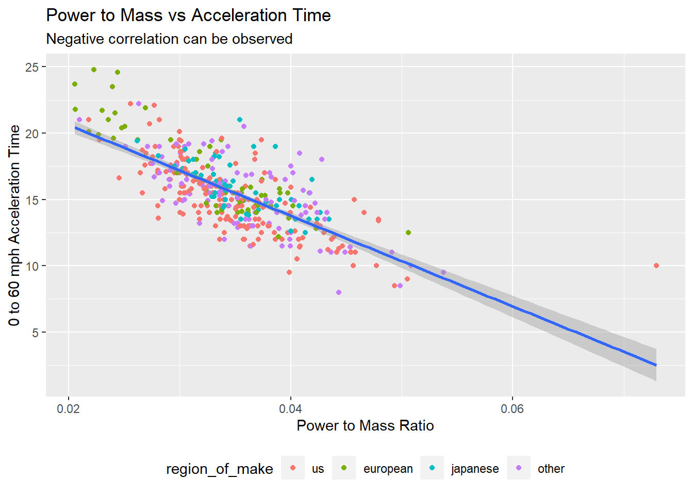

I wish to explore whether automobile makers from different regions (Japanese, European, and U.S. have different emphasis (more horsepower, better fuel economy etc.) when they make their cars and engines).
The intended audience for this analysis is those who are interested in cars and don’t bother to see a oversimplified analysis.
First let’s look at the distribution of car horsepower
library(ggplot2)cars_data %>%ggplot(aes(x=horsepower)) +geom_histogram(binwidth=20) +facet_grid(region_of_make~.) +labs(title="Distribution of engine horsepowers ", subtitle ="faceted by regions of make, binsize = 20",caption ="The major european and japanese makers seemed very uninterested in making cars with >150 horsepower. The dataset documents mostly cars by U.S. manufacturers.") +ylab("Count") +xlab("Engine Horsepower")
Disclaimer
The dataset does not seem to be anywhere close to a comprehensive dataset of automobiles in the 1970s to 1980s. So any trend oberserved here may be due to a selection bias.
Power to Displacement Ratio
In addition to the horsepower and displacement data originally from the data set, compute the horsepower to displacement ratio, which is essentially an indicator of how efficient the engines are.
# A tibble: 4 × 5
region_of_make mean_cyl_count mean_displacement mean_power_to_displa…¹ mean_…²
<fct> <dbl> <dbl> <dbl> <dbl>
1 us 6.26 247. 0.512 19.8
2 european 4.19 109. 0.729 27.8
3 japanese 4.04 102. 0.779 30.2
4 other 5.63 204. 0.609 23.6
# … with abbreviated variable names ¹mean_power_to_displacement_ratio,
# ²mean_mpg
cars_data %>%ggplot(aes(x = horsepower, y=power_per_displacement, color=region_of_make)) +geom_point(aes(size=mpg), alpha=0.5) +labs(title="Horsepower vs. Power to Displacement ratio", subtitle ="Colored by region of manufacturer",caption ="The major U.S. cars typically has much higher horsepower that is not achieved by engineering for higher power to displacement ratio. Also make note of the outliers at the top") +ylab("Power to Displacement Ratio (Horsepower/Displacement)") +xlab("Horsepower")
From the horsepower vs. power-to-displacement ratio plot, we can see that the US car makers are all about ramping up horsepowers but fall behind on engine efficiency.
The rest of the car makers seemed to be making similar cars with mediocre horsepower and good power-to-displacement ratio. It is also inferrable from the plot that power-to-displacement ratio generally correlates with MPG, an indicator of fuel economy, which makes sense.
Note
Notably, there are 4 cars on the top of the plot that appear to have insanely high power-to-displacement ratio when compared to others. These are the Mazda Rx sport cars with rotary engines (as opposed to the traditional piston and cylinder engines). Rotary engines are known for their deceivingly small displacement size (they can consume more fuel than a traditional piston engine with 2-3 times its displacement), which can be seen on the plot that they had no different mpgs compared to other japanese and european cars. Perhaps rotary engine cars should be excluded from the analysis?
Power to Mass Ratio
Power to mass ratio is a good indicator of a car’s ability to accelerate fast, since having more power from the engine per unit weight of the car will help it overcome the inertia when the car is at a complete stop.
library(ggplot2)cars_data %>%mutate(power_to_mass = horsepower/weight) %>%ggplot(aes(x=power_to_mass, y= acceleration)) +geom_point(aes(color=region_of_make)) +geom_smooth(formula = y ~ x, method ="lm") +theme(legend.position ='bottom') +ylab("0 to 60 mph Acceleration Time") +xlab("Power to Mass Ratio") +labs(title="Power to Mass vs Acceleration Time",subtitle="Negative correlation can be observed")model <- cars_data %>%mutate(power_to_mass = horsepower/weight) %>%lm(formula = acceleration ~ power_to_mass)summary(model)
Call:
lm(formula = acceleration ~ power_to_mass, data = .)
Residuals:
Min 1Q Median 3Q Max
-4.3079 -1.3019 -0.1307 1.0270 7.4830
Coefficients:
Estimate Std. Error t value Pr(>|t|)
(Intercept) 27.443 0.565 48.57 <2e-16 ***
power_to_mass -341.869 15.991 -21.38 <2e-16 ***
---
Signif. codes: 0 '***' 0.001 '**' 0.01 '*' 0.05 '.' 0.1 ' ' 1
Residual standard error: 1.875 on 388 degrees of freedom
Multiple R-squared: 0.5408, Adjusted R-squared: 0.5397
F-statistic: 457 on 1 and 388 DF, p-value: < 2.2e-16

Figure 1: Power to Mass ratio vs. Acceleration time(lower is faster), colored by region of maker.
Seeing the margin plot and the summary of the fitted linear model(RDocumentation, n.d.), it is not to tell that the power to mass ratio is negatively correlated with the time it takes for a car to accelerate from 0 to 60mph (so positive correaltion with the ability to accelerate).
Does engine efficiency improve over the 10 years or so?
Although MPG is an direct indication of fuel economy, it is not an good indicator for engine efficiency because improvements in mileage can come from both increased engine efficiency and other factors like building lighter cars or making them more aerodynamic.
The peak power to engine displacement ratio is considered to be a metric for engine efficiency(DeCicco 2010). It can be considered as a ratio of the power output of the engine (usually measured in Kw) to fuel consumption per engine cycle (which is proportional to the engine displacement).
cars_data <- cars_data %>%mutate(power_per_displacement = horsepower/displacement)cars_data %>%group_by(year, region_of_make) %>%summarize(mean_cyl_count =mean(cylinders),mean_displacement =mean(displacement), mean_power_to_displacement_ratio =mean(power_per_displacement),sd_power_to_displacement_ratio =sd(power_per_displacement),mean_mpg =mean(mpg)) %>%ggplot(aes(x = year, y=mean_power_to_displacement_ratio, color=region_of_make)) +geom_point(aes(size=mean_mpg), alpha=0.3) +geom_line() +geom_errorbar(aes(ymin=mean_power_to_displacement_ratio-sd_power_to_displacement_ratio, ymax=mean_power_to_displacement_ratio+sd_power_to_displacement_ratio)) +facet_grid(region_of_make~.) +labs(title="Trends in Power to Displacement ratio over time", subtitle ="Faceted by Region",caption =str_wrap("There is a slight increase in the mean Power to Displacement ratio by the US manufactures. We also observe a general decrease in that ratio for European and Japanese cars")) +ylab("Mean Power to Displacement Ratio (Horsepower/Displacement)") +xlab("Year") +theme(plot.caption =element_text(hjust =0))
`summarise()` has grouped output by 'year'. You can override using the
`.groups` argument.
Here we do observe a very slight increase in Power to Displacement ratio by the US makers, rising from around 0.5 in 1970 to around 0.6 in 1982. On the other hand, the Power to Displacement ratio of European and Japanese cars have fallen since 1970. It is noteworthy still that by 1982, the both the European cars and the Japanese cars still have higher Power to Displacement Ratio compared to the US cars desipte the decline.
Also quite interestingly, here the Power to Displacement ratio alone does not seem to correlate with mpg well enough. While we do see a stead increase in both Power to Displacement and mpg in the US cars, the mpg for the European and Japanese cars increased despite the decline in Power to Displacement ratio (perhaps through the improvement of aerodynamics or weight reduction).
Results Summary
During the 1970s and early 1980s, the US makers alone produces high horsepower (> 150hp) cars. During this period we also see that the US cars generally has less Power to Displacement ratio compared to European and Japanese cars. We also established that the higher Power to Mass ratio meant higher capability to accelerate. At last we observed an improvement in US car Power to Displacement ratio along with mileage improvements, but the Europeans and Japanese cars are nontheless still more efficient.
Functions used
mutate
separate
drop_na
group_by
summarize
geom_histogram
geom_point
geom_line
References
DeCicco, John. 2010. “A Fuel Efficiency Horizon for u.s. Automobiles,” October.